Code
a=sample(1:10,10, replace=T)
a [1] 7 3 4 9 8 4 6 1 8 9Tony Duan
Probability is the branch of mathematics concerning events and numerical descriptions of how likely they are to occur. The probability of an event is a number between 0 and 1; the larger the probability, the more likely an event is to occur.
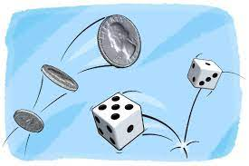
each number around 10%
each number around 10%
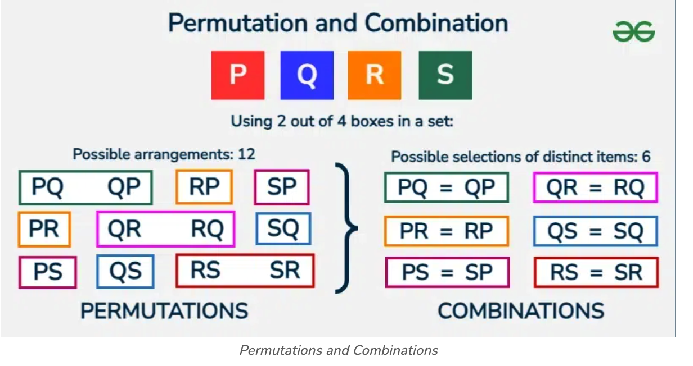
[,1] [,2]
[1,] 1 2
[2,] 1 3
[3,] 1 4
[4,] 2 1
[5,] 2 3
[6,] 2 4
[7,] 3 1
[8,] 3 2
[9,] 3 4
[10,] 4 1
[11,] 4 2
[12,] 4 3all_num!/choose!
4!/2!
or
[,1] [,2]
[1,] 1 2
[2,] 1 3
[3,] 1 4
[4,] 2 3
[5,] 2 4
[6,] 3 4all_num!/((all_num-choose)! * choose!
4!/((4-2)! * 2!)
or
each one snoring probability is 20%,4 people in one room.
In one room,at least one snoring probability is ?
choose 2 from 4: factorial(4) / (factorial(4-2)*factorial(2))
total 6 Permutations
choose 3 from 4 Combinations(order matter),factorial(4) / (factorial(4-3)*factorial(3))
4 Combinations:
4!=432*1=24 combination
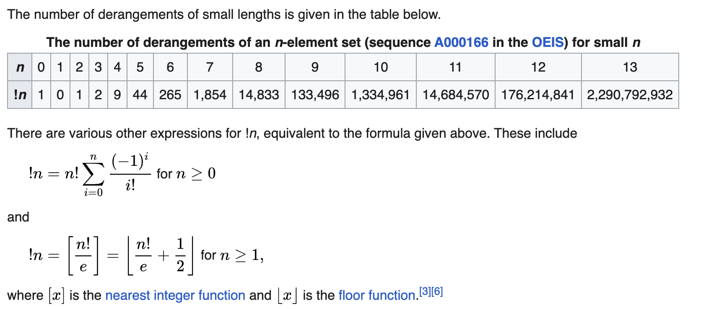
or
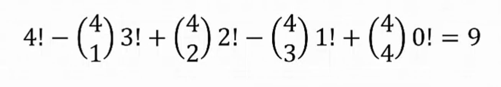
There are 9 Derangement(all wrong)
So the all wrong probability of choose 4 number from 4 number is
4!=432*1=24 combination
any of the 4 number can be correct, and remaining 3 number all wrong and it become the D(3) Derangement problem
So the probability of choose 4 number from 4 number and only 1 correct is
the problem is same as choose 2 number from 4 number.total 6 Combinations(order no matter)
So the probability of choose 4 number from 4 number and only 2 correct is
Its same as all correct. since 3 correct the last one will be also correct
Its same as all correct. since 3 correct the last one will be also correct
So all event total probability is 1
the binomial distribution with parameters n and p is the discrete probability distribution of the number of successes in a sequence of n independent experiments, each asking a yes–no question, and each with its own Boolean-valued outcome: success (with probability p) or failure (with probability 1-p)
for a single trial, i.e., n = 1, the binomial distribution is a Bernoulli distribution
1 people snoring Probability
[1] 0.40961,2,3,4 people snoring Probability
[1] 0.4096 0.4096 0.1536 0.0256 0.0016sum of all event Probability is always 1
<=1 people snoring
X is a random variable following a normal distribution with mean μ and variance σ2
68% within 1 standard deviation
95% within 2 standard deviation
99.7% within 3 standard deviation
standard Normal Distribution is special Normal Distribution with mean=0 and standard deviation =1
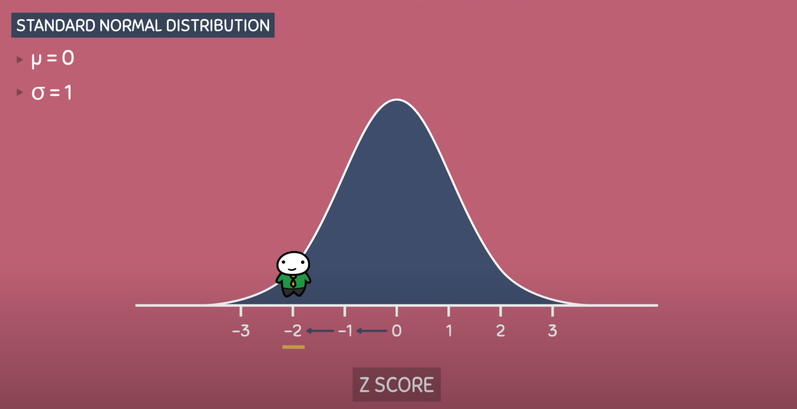
Z table
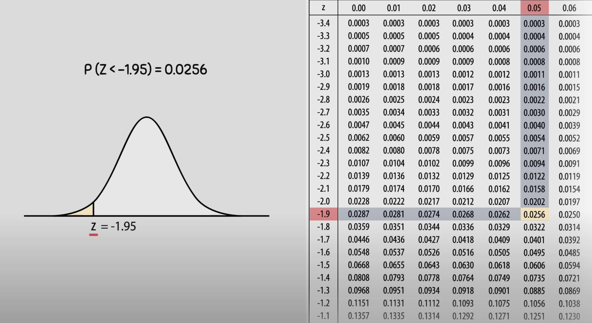
transfer any normal Distribution into standard Normal Distribution
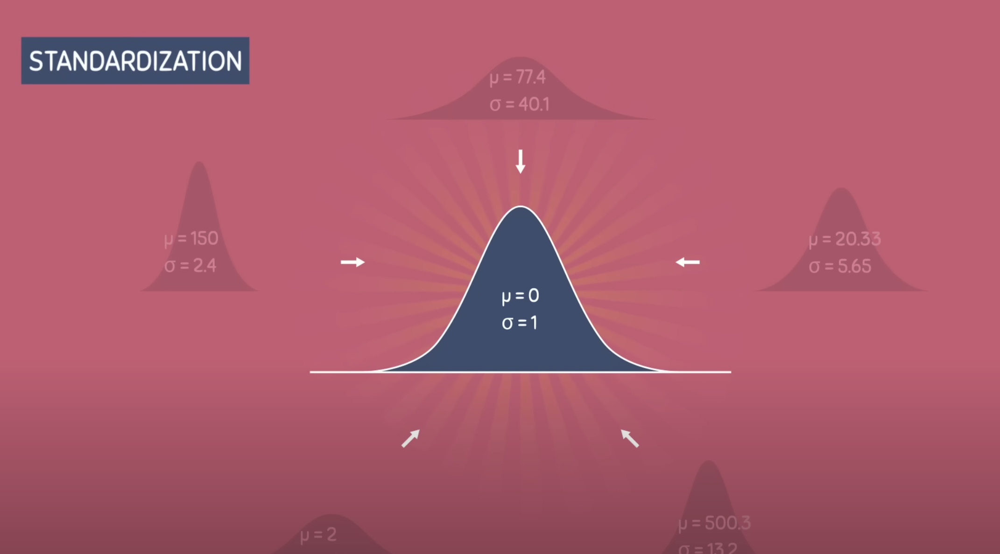
formula:
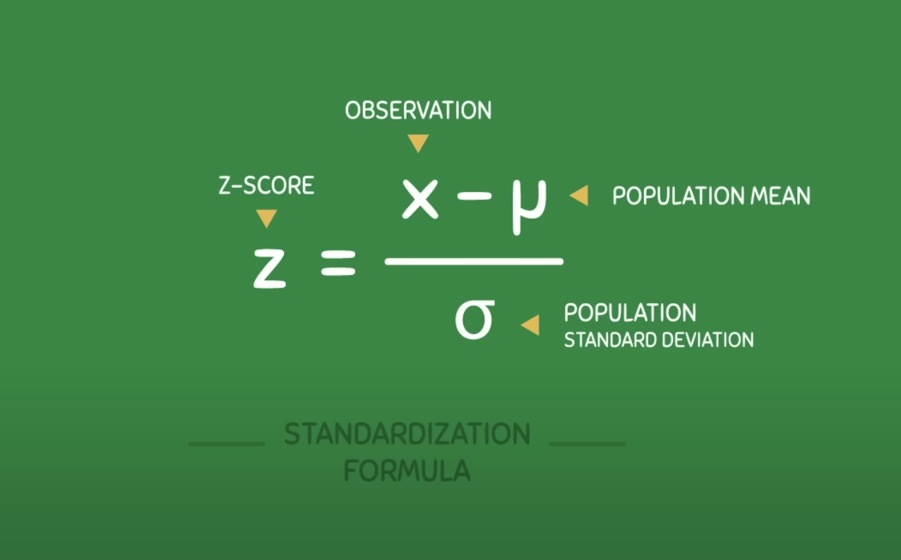
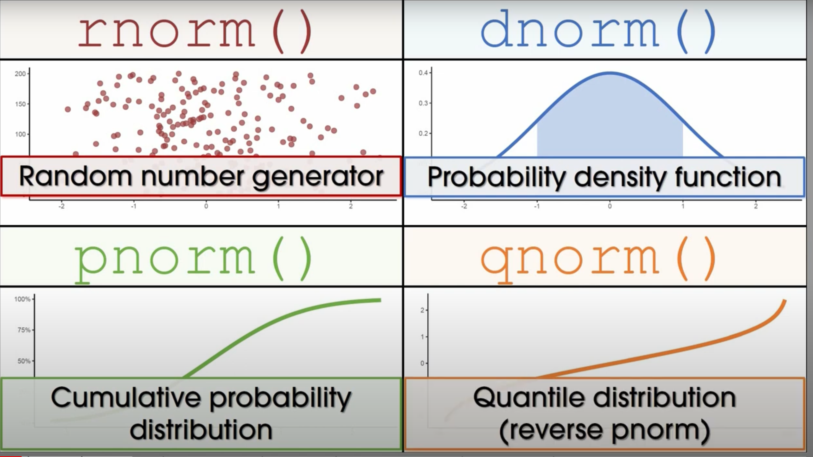
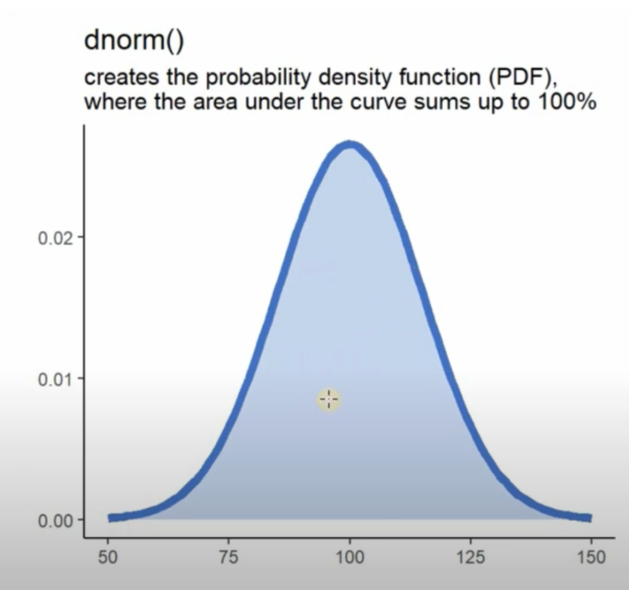
computes the pdf at location 0 of N(0,4),normal distribution with mean 1 and variance 4.
sd is the standard deviation, which is the square root of the variance.
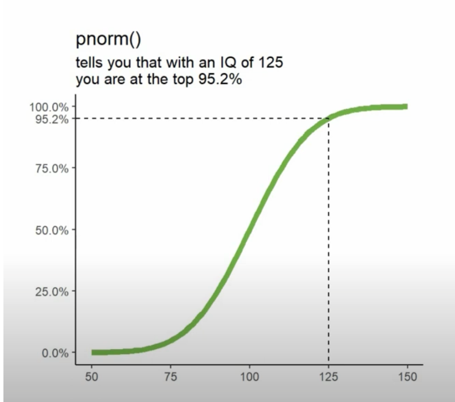
Probability of <=70 from Normal Distribtion with mean=75 and sd=5
smaller than 1 standard deviation from the mean
Probability of >=80 from Normal Distribtion with mean=75 and sd=5
larger than 1 standard deviation from the mean
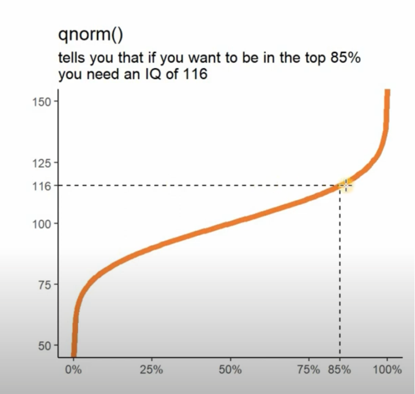
Q1
Q3
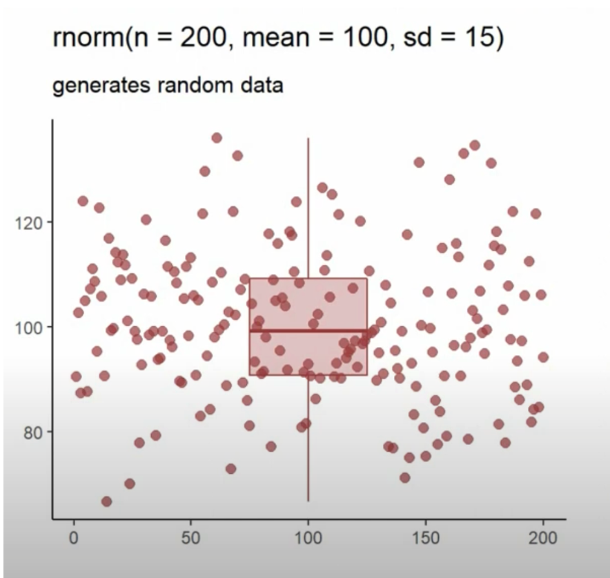
null hypothesis (H0):The data is normally distributed.
if p-value =>0.05 then normally distributed
Shapiro-Wilk normality test
data: nd_data
W = 0.99888, p-value = 0.8031if p-value <0.05 then not normally distributed(reject the null hypothesis)
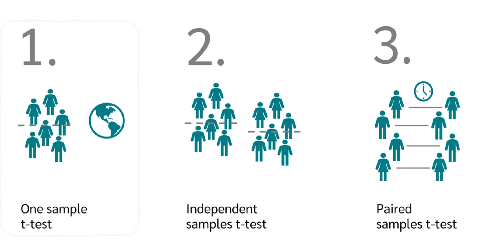
https://www.huber.embl.de/users/kaspar/biostat_2021/2-demo.html
https://www.youtube.com/watch?v=peEsXbdMY_4
https://www.youtube.com/watch?v=ETd-jPhI_tE
https://www.youtube.com/watch?v=kvmSAXhX9Hs
https://www.youtube.com/watch?v=RlhnNbPZC0A
https://www.youtube.com/watch?v=X5NXDK6AVtU
https://www.scribbr.com/statistics/probability-distributions/#:~:text=A%20probability%20distribution%20is%20a,using%20graphs%20or%20probability%20tables.
https://www.youtube.com/watch?v=Q_pO9NzWxPY
https://www.statology.org/test-for-normality-in-r/
https://en.wikipedia.org/wiki/Derangement
R version 4.4.1 (2024-06-14)
Platform: aarch64-apple-darwin20
Running under: macOS 15.1
Matrix products: default
BLAS: /Library/Frameworks/R.framework/Versions/4.4-arm64/Resources/lib/libRblas.0.dylib
LAPACK: /Library/Frameworks/R.framework/Versions/4.4-arm64/Resources/lib/libRlapack.dylib; LAPACK version 3.12.0
locale:
[1] en_US.UTF-8/en_US.UTF-8/en_US.UTF-8/C/en_US.UTF-8/en_US.UTF-8
time zone: Asia/Shanghai
tzcode source: internal
attached base packages:
[1] stats graphics grDevices utils datasets methods base
other attached packages:
[1] gtools_3.9.5
loaded via a namespace (and not attached):
[1] htmlwidgets_1.6.4 compiler_4.4.1 fastmap_1.2.0 cli_3.6.3
[5] tools_4.4.1 htmltools_0.5.8.1 yaml_2.3.10 rmarkdown_2.28
[9] knitr_1.48 jsonlite_1.8.9 xfun_0.48 digest_0.6.37
[13] rlang_1.1.5 evaluate_1.0.1 ---
title: "Probability"
author: "Tony Duan"
execute:
warning: false
error: false
format:
html:
toc: true
toc-location: right
code-fold: show
code-tools: true
number-sections: true
code-block-bg: true
code-block-border-left: "#31BAE9"
---
Probability is the branch of mathematics concerning events and numerical descriptions of how likely they are to occur. The probability of an event is a number between 0 and 1; the larger the probability, the more likely an event is to occur.
{width="350"}
# Random number
## draw 10 number from 1 to 10
```{r}
a=sample(1:10,10, replace=T)
a
```
each number around 10%
```{r}
as.data.frame(table(a))
```
## draw 10,000 number from 1 to 10
```{r}
a=sample(1:10,10000, replace=T)
```
each number around 10%
```{r}
as.data.frame(table(a))
```
# Permutations and Combinations

## Permutations(order dose matter), 2 number from 4 number
```{r}
library(gtools)
all_num=4
choose=2
res<- permutations(n= all_num, r = choose, v = c(1:all_num))
res
```
```{r}
print (nrow(res))
```
all_num!/choose!
4!/2!
```{r}
(4*3*2*1)/(2*1)
```
or
```{r}
factorial(4) / factorial(2)
```
## Combinations(order no matter), 2 number from 4 number
```{r}
library(gtools)
all_num=4
choose=2
res<- combinations(n= all_num, r = choose, v = c(1:all_num))
res
```
```{r}
print (nrow(res))
```
all_num!/((all_num-choose)! \* choose!
4!/((4-2)! \* 2!)
```{r}
(4*3*2*1)/((2*1)*(2*1))
```
or
```{r}
factorial(4) / (factorial(4-2)*factorial(2))
```
# conditional probability
each one snoring probability is 20%,4 people in one room.
In one room,at least one snoring probability is ?
```{r}
p=0.2
n=4
```
## soluition 1:P(at least one)=P(1 snoring)+P(2 snoring)+P(3 snoring)+P(4 snoring)
### 0 snoring
```{r}
p0=(0.8*0.8*0.8*0.8)
p0
```
### 1 snoring
```{r}
p1=(0.2*0.8*0.8*0.8)*4
p1
```
### 2 snoring
choose 2 from 4: factorial(4) / (factorial(4-2)\*factorial(2))
total 6 Permutations
```{r}
factorial(4) / (factorial(4-2)*factorial(2))
```
```{r}
p2=(0.2*0.2*0.8*0.8)*6
p2
```
### 3 snoring
choose 3 from 4 Combinations(order matter),factorial(4) / (factorial(4-3)\*factorial(3))
4 Combinations:
```{r}
factorial(4) / (factorial(4-3)*factorial(3))
```
```{r}
p3=(0.2*0.2*0.2*0.8)*4
p3
```
### 4 snoring
```{r}
p4=(0.2*0.2*0.2*0.2)
p4
```
### at least one:
```{r}
P_at_least_one=p1+p2+p3+p4
P_at_least_one
```
## solution 2:P(at least one)=1-P(no one snoring)
```{r}
P_at_least_one2=1-0.8*0.8*0.8*0.8
P_at_least_one2
```
# Derangement problem
## Question 1.what is probability of choose 4 number from 4 number and 0 correct(all wrong).
### permutations(order matter)
4!=4*3*2\*1=24 combination
```{r}
4*3*2*1
```
### Derangement

or

There are 9 Derangement(all wrong)
```{r}
e=2.71828
#D(4)=(4!+1)/e
D_4=floor((4*3*2*1+1)/e)
D_4
```
So the all wrong probability of choose 4 number from 4 number is
```{r}
Q1=(floor((4*3*2*1+1)/e))/(4*3*2*1)
Q1
```
## Question 2. what is probability of choose 4 number from 4 number and only 1 correct
### permutations(order matter)
4!=4*3*2\*1=24 combination
```{r}
4*3*2*1
```
### Derangement
any of the 4 number can be correct, and remaining 3 number all wrong and it become the D(3) Derangement problem
```{r}
e=2.71828
#D(3)=(3!+1)/e
D_3=floor((3*2*1+1)/e)
D_3
```
So the probability of choose 4 number from 4 number and only 1 correct is
```{r}
Q2=(4*2)/(4*3*2*1)
Q2
```
## Question 3. what is probability of choose 4 number from 4 number and only 2 correct
the problem is same as choose 2 number from 4 number.total 6 Combinations(order no matter)
```{r}
factorial(4) / (factorial(4-2)*factorial(2))
```
So the probability of choose 4 number from 4 number and only 2 correct is
```{r}
Q3=6/(4*3*2*1)
Q3
```
## Question 4.what is probability of choose 4 number from 4 number and only 3 correct
Its same as all correct. since 3 correct the last one will be also correct
```{r}
Q4=1/(4*3*2*1)
Q4
```
## Question 5.what is probability of choose 4 number from 4 number and 4 correct(all correct)
Its same as all correct. since 3 correct the last one will be also correct
So all event total probability is 1
```{r}
Q1+Q2+Q3+Q4
```
# Distribution
## Binomial distribution
the binomial distribution with parameters n and p is the discrete probability distribution of the number of successes in a sequence of n independent experiments, each asking a yes–no question, and each with its own Boolean-valued outcome: success (with probability p) or failure (with probability 1-p)
for a single trial, i.e., n = 1, the binomial distribution is a Bernoulli distribution
### Probability density function (pdf)
1 people snoring Probability
```{r}
n = 4 # number of people in a room
p = 0.2 # snoring
dbinom(x=1, size=n, prob=p) # 1 people snoring Probability
```
1,2,3,4 people snoring Probability
```{r}
n = 4 # number of people in a room
p = 0.2 # snoring
dbinom(x=c(0,1,2,3,4), size=n, prob=p) # 1 people snoring Probability
```
sum of all event Probability is always 1
```{r}
sum(dbinom(x=c(0,1,2,3,4), size=n, prob=p))
```
### Probability function
\<=1 people snoring
```{r}
pbinom(q=1, size=n,prob=p, lower.tail=TRUE)
```
### generate 10000 number from 0 to 4 with Probability=0.2
```{r}
a=rbinom(1000,size=4,0.2)
table(a)
```
## Normal Distribution(also called Gaussian distribution)
X is a random variable following a normal distribution with mean μ and variance σ2
68% within 1 standard deviation
95% within 2 standard deviation
99.7% within 3 standard deviation
### Z score and standard Normal Distribution
standard Normal Distribution is special Normal Distribution with mean=0 and standard deviation =1

Z table

### Standardization
transfer any normal Distribution into standard Normal Distribution

formula:
{width="421"}
### R function

### Probability Density Function (pdf)
{width="500"}
computes the pdf at location 0 of N(0,4),normal distribution with mean 1 and variance 4.
sd is the standard deviation, which is the square root of the variance.
```{r}
dnorm(0, mean = 1, sd = 2)
```
### cumulative distribution function(cdf)
{width="500"}
Probability of \<=70 from Normal Distribtion with mean=75 and sd=5
smaller than 1 standard deviation from the mean
```{r}
pnorm(q=70,mean=75,sd=5)
```
Probability of \>=80 from Normal Distribtion with mean=75 and sd=5
larger than 1 standard deviation from the mean
```{r}
1-pnorm(q=80,mean=75,sd=5)
```
### quantile function
{width="500"}
Q1
```{r}
qnorm(p=0.25,mean=75,sd=5)
```
Q3
```{r}
qnorm(p=0.75,mean=75,sd=5)
```
### random number generator
{width="500"}
### generate 1000 number from Normal Distribtion with mean=75 and sd=5
```{r}
nd=rnorm(n=1000,mean=75,sd=5)
nd=sort(nd)
```
```{r}
mean(nd)
```
```{r}
sd(nd)
```
```{r}
hist(nd)
```
```{r}
dens=dnorm(nd,mean=mean(nd),sd=sd(nd))
```
```{r}
plot(nd,dens,type='l')
```
### check data normally distributed
```{r}
nd_data=rnorm(n=1000,mean=0,sd=2)
nd_data=sort(nd_data)
```
```{r}
non_nd_data=seq(1:1000)
non_nd_data=sort(non_nd_data)
```
#### method 1 :histogram
```{r}
#define plotting region
par(mfrow=c(1,2))
#create histogram for both datasets
hist(nd_data, col='steelblue', main='Normal')
hist(non_nd_data, col='steelblue', main='Non-normal')
```
#### method 2 :Q-Q plot
```{r}
#define plotting region
par(mfrow=c(1,2))
#create Q-Q plot for both datasets
qqnorm(nd_data, main='Normal')
qqline(nd_data)
qqnorm(non_nd_data, main='Non-normal')
qqline(non_nd_data)
```
#### Method 3: Shapiro-Wilk Test
null hypothesis (H0):The data is normally distributed.
if p-value =\>0.05 then normally distributed
```{r}
#perform shapiro-wilk test
shapiro.test(nd_data)
```
if p-value \<0.05 then not normally distributed(reject the null hypothesis)
```{r}
#perform shapiro-wilk test
shapiro.test(non_nd_data)
```
## student t distribution

### one sample t test
### two sample t test
### Paired t test
### Pearson correlation coefficient
## F distribution
### ANOVA
## Chi-square
### Chi-square goodness of fit test
### Chi-square test of independence
## Poisson Distribution
# Reference
https://www.huber.embl.de/users/kaspar/biostat_2021/2-demo.html
https://www.youtube.com/watch?v=peEsXbdMY_4
https://www.youtube.com/watch?v=ETd-jPhI_tE
https://www.youtube.com/watch?v=kvmSAXhX9Hs
https://www.youtube.com/watch?v=RlhnNbPZC0A
https://www.youtube.com/watch?v=X5NXDK6AVtU
https://www.scribbr.com/statistics/probability-distributions/#:\~:text=A%20probability%20distribution%20is%20a,using%20graphs%20or%20probability%20tables.
https://www.youtube.com/watch?v=Q_pO9NzWxPY
https://www.statology.org/test-for-normality-in-r/
https://en.wikipedia.org/wiki/Derangement
```{r, attr.output='.details summary="sessionInfo()"'}
sessionInfo()
```